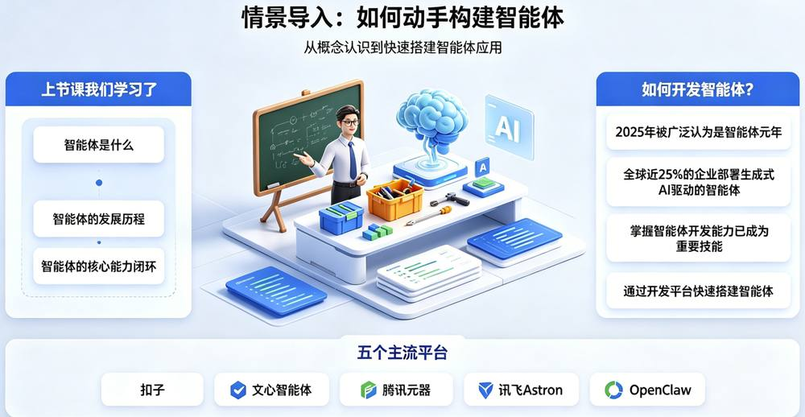
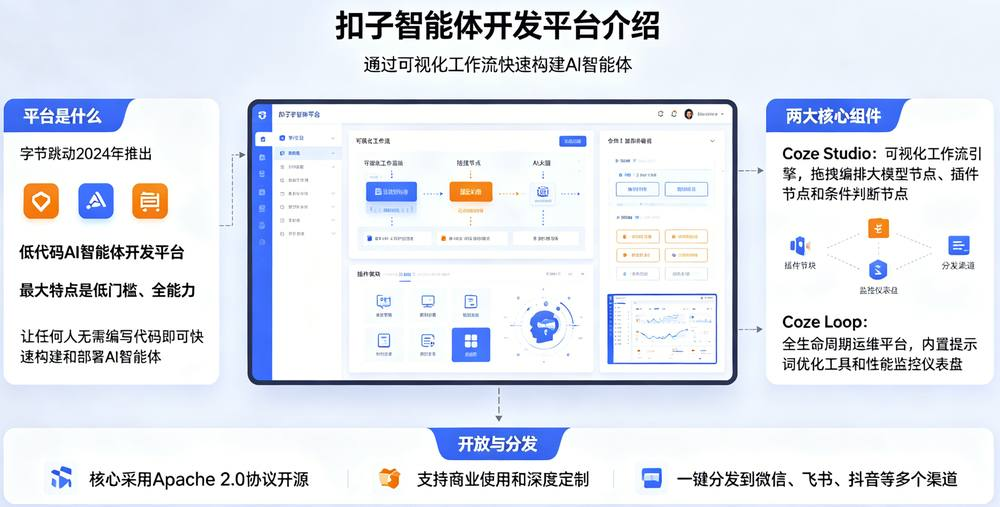
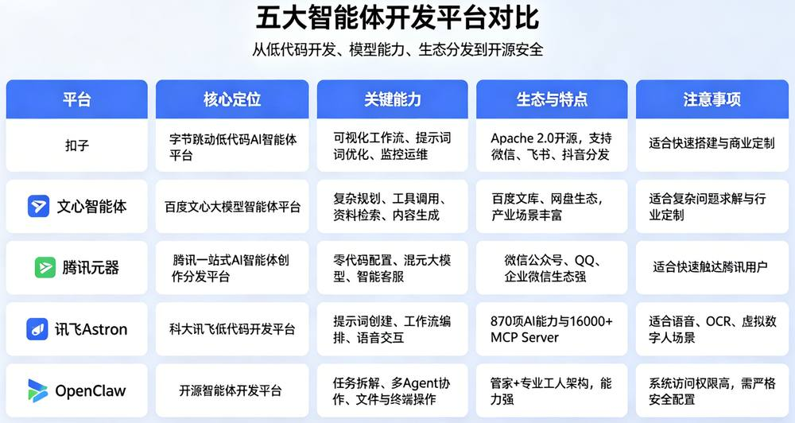
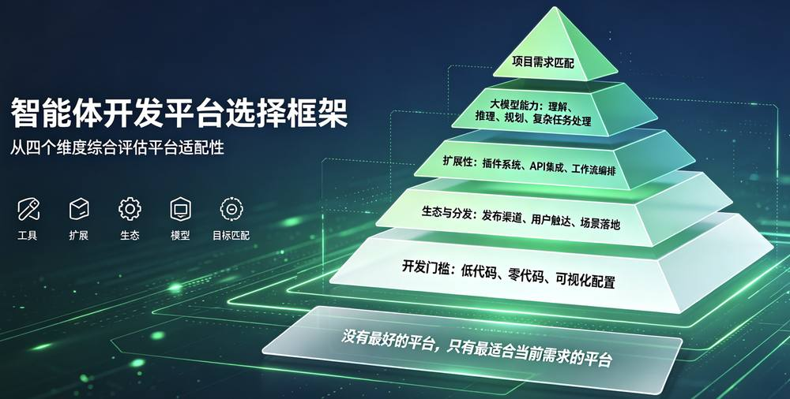

第 1 页 · 2 常用的智能体开发平台
2 常用的智能体开发平台

模块6：打造智能体


第 2 页 · 幻灯片

第 3 页 · 一、扣子(Coze) -- 字节跳动
一、扣子(Coze) -- 字节跳动

第 4 页 · 二、文心智能体
二、文心智能体
第 5 页 · 三、腾讯元器
三、腾讯元器
第 6 页 · 四、讯飞Astron
四、讯飞Astron
第 7 页 · 五、OpenClaw
五、OpenClaw
第 8 页 · 五大平台对比总览
五大平台对比总览

第 9 页 · 平台选择的考量因素
平台选择的考量因素

第 10 页 · 智慧社区养老智能体设计方案
智慧社区养老智能体设计方案

设计一个针对社区养老的智能体开发方案。
| 任务要求 | 你的完成情况 |
| 安装桌面user版 | |
| qoderwork功能描述 | |
| 养老智能体技术选型 | |
| 智能体主要功能 | |
| 其它 |
第 11 页 · 学生分享及教师点评
学生分享及教师点评

| 分享要点 | 分值 | 计分 | 教师点评 |
| 1、开发社区养老智能体时，你是如何综合考量智能体平台选型与该智能体的适配度的？ | 20 | 主动使用AI工具 | |
| 2、小组研讨中，你们围绕养老智能体落地开展了哪些深度交流？ | 10 | 集思广益、团结协助 | |
| 3、结合养老服务场景，简述qoderwork的优势。 | 30 | 积极思考、善于思考总结 | |
| 4、养老智能体会给社区养老行业带来哪些影响？简述 1-3 点？ | 30 | 创新思维、与众不同 | |
| 5、其它（包含表达逻辑、仪态、发言主动性、表述流畅度、自信度等） | 10 | 表达流畅自信，善用技术、贴合民生需求 |
第 12 页 · 子任务3：语音提示处理
子任务3：语音提示处理

善用智能体
生活好帮手